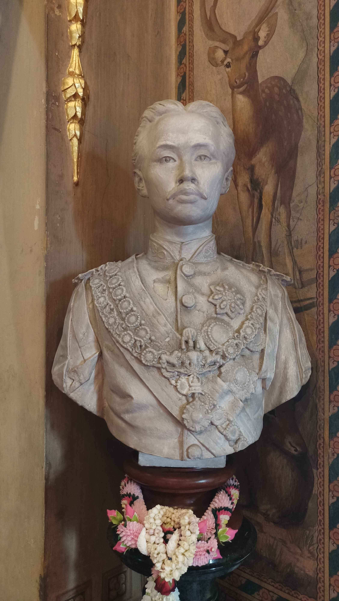
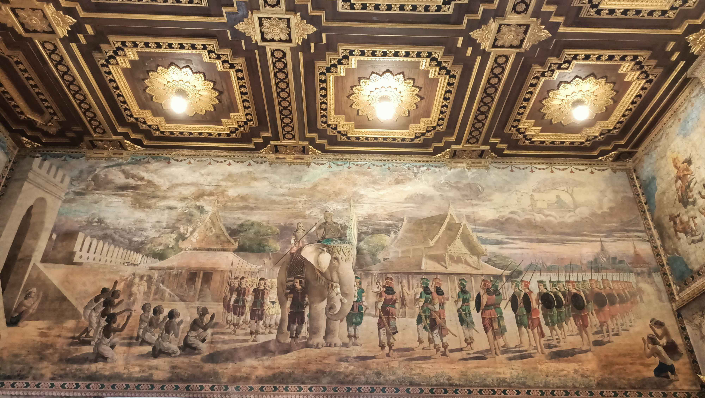
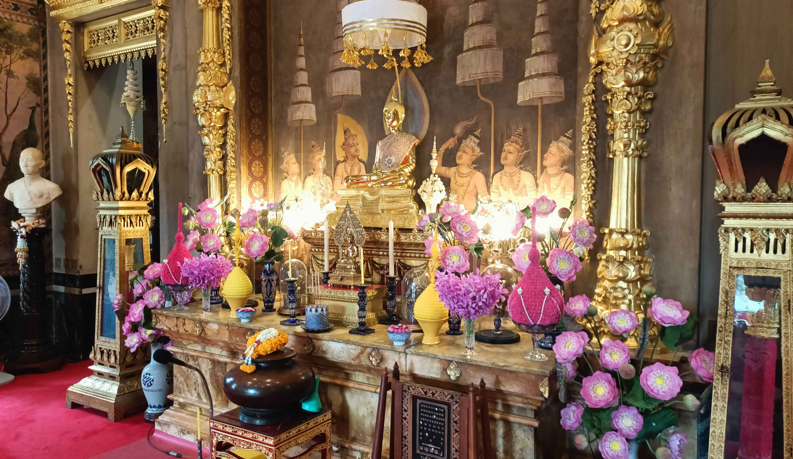
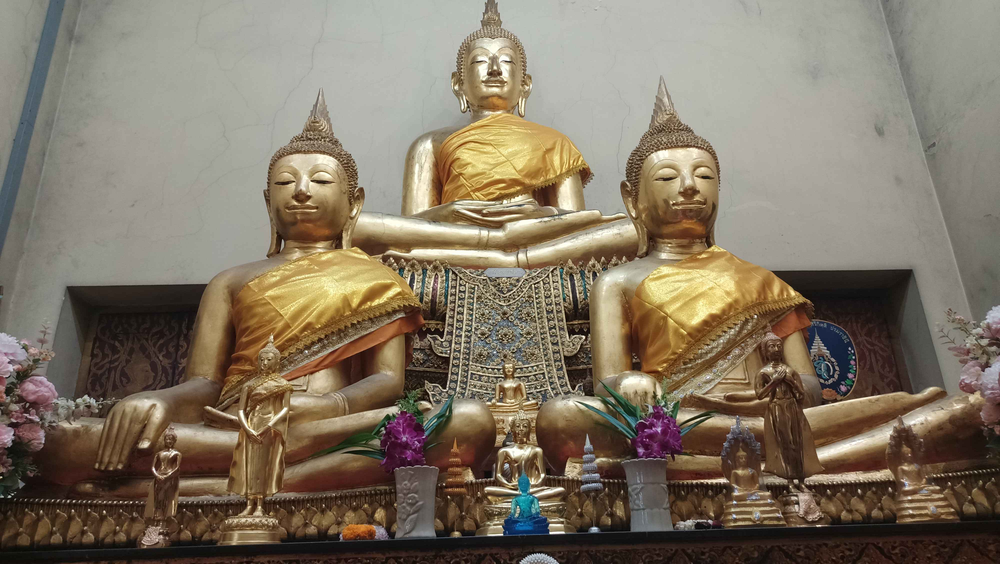

พระอุโบสถของวัดราชาธิวาสวิหาร สร้างขึ้นในสมัยพระบาทสมเด็จพระนั่งเกล้าเจ้าอยู่หัว รัชกาลที่ ๓ และบูรณะปฏิสังขรณ์เรื่อยมา กระทั่งพระบาทสมเด็จพระจุลจอมเกล้าเจ้าอยู่หัว รัชกาลที่ ๕ ทรงพระกรุณาโปรดเกล้าฯ ให้สมเด็จพระเจ้าบรมวงศ์เธอ เจ้าฟ้ากรมพระยานริศรานุวัดติวงศ์ หรือ “สมเด็จครู” เป็นผู้บูรณะซ่อมแซมใหม่ทั้งหมด แต่ยังคงแบบเดิมไว้ โดยตั้งหันไปทางทิศตะวันตก ลงสู่แม่น้ำเจ้าพระยา อยู่ในตำแหน่งเดียวกับหลังเดิม
ภายในประดิษฐานพระพุทธรูปพระสัมพุทธพรรณี (จำลอง) เป็นพระพุทธรูปศิลปะรัตนโกสินทร์ ปางสมาธิราบ ขนาดหน้าตักกว้าง ๒๐ นิ้ว วัสดุโลหะกะไหล่ทองไม่มีพระเกตุมาลา พระจีวรเป็นริ้วเช่นเดียวกับครองผ้าของพระภิกษุ ซึ่งจำลองจากพระสัมพุทธพรรณี องค์ที่ประดิษฐานอยู่ในพระอุโบสถวัดพระศรีรัตนศาสดาราม โดยใต้ฐานพระพุทธรูปเป็นที่ประดิษฐานพระสรีรังคารสมเด็จพระศรีสวรินทิราบรมราชเทวี พระพันวัสสาอัยยิกาเจ้า
จุดเด่นคือจิตรกรรมสีปูนเปียก ซึ่งแสดงให้เห็นถึงการปฏิบัติงานร่วมกันระหว่าง สมเด็จพระเจ้าบรมวงศ์เธอ เจ้าฟ้ากรมพระยานริศรานุวัดติวงศ์ ผู้ได้รับการยกยกว่า “สมเด็จครู” และ “นายช่างใหญ่แห่งกรุงสยาม” กับ คาร์โล ริโกลี จิตรกรมีชื่อชาวอิตาลี ซึ่งทางราชสำนักว่าจ้างให้เข้ามาเขียนภาพจิตรกรรมฝาผนัง ในเทคนิคปูนเปียกแบบตะวันตก ประดับภายในพระอุโบสถ


จิตรกรรมสีปูนเปียก

พระสัมพุทธพรรณี

พระพุทธรูปด้านหลังพระอุโบสถ